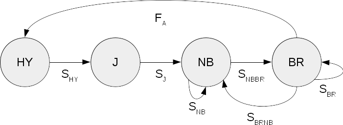
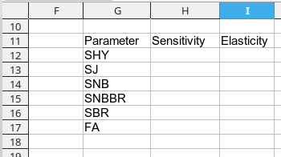
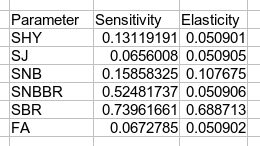
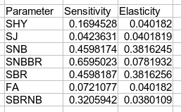
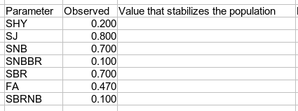
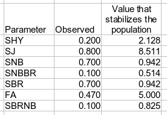

One of the advantages of using demographic models to estimate population growth is that we can evaluate which demographic rate has the biggest effect on population growth. This is extremely useful information, because different environmental conditions can affect some demographic rates and not others. If we know which demographic rate has the biggest effect on population growth we can direct management interventions to efforts that change that rate. We use sensitivity analysis or elasticity analysis to help us decide how best to intervene.
Both sensitivity and elasticity refer to the amount of change we can expect in growth rate when we change one of the demographic rates. Sensitivity involves changing the demographic rate by a small, fixed amount and observing the change in growth rate. Sensitivity calculated analytically, the way we will do it today, is an instantaneous measure - the slope of a tangent line at a point.
Comparing sensitivities can be misleading because of differences in scale for survival and reproductive rates - a change of 0.01 is a much larger change for a survival probability (which has to fall between 0 and 1) than for a fecundity (which can be any positive value, and for some species may be in the tens of thousands). Elasticity measures the change in λ for a constant percentage change in parameter values, which standardizes for differences in units and allows us to make valid comparisons between survival and fecundity.
We will use the raven population models you made in the previous lab for this - open up your matrix model spreadsheet from last time, and switch to the "Urban" tab, where the Lefkovitch matrix for birds living in town is found.
|  |
If you recall, the life history diagram we used to determine which survival probabilities (s) and fecundity (F) entries we needed to include in our Lefkovitch matrix looked like this. Recall that the circles are the life stages, and arrows connecting circles are transitions from one stage to another. Each arrow has a demographic rate associated with it - arrows that form loops that start and end with the same stage are survival probabilities for individuals who remain in the same stage. |
|||||||||||||||||||||||||||||||
|
Based on the diagram, we laid out a matrix of demographic rates like so. |
|||||||||||||||||||||||||||||||
We estimated population growth rate in the last lab - you should have it in cell B8 of your Urban worksheet. We want to know how much we can expect it to change if we changed any single one of these demographic rates. We will first calculate the sensitivities, and then will calculate elasticities for each of the demographic rates we used.
1. Lay out a table for sensitivities and elasticities for all parameters. In cell G11 enter "Parameter", and then enter the following labels for the parameters in the rows below G11:
We'll leave out SBRNB because it's 0 for ravens in the urban area. In cell H11 enter "Sensitivity", and in cell i11 enter "Elasticity". Your layout should look like this:
2. Calculate the reproductive values for the urban raven matrix. The sensitivities require us to have both a stable age distribution (w, which is the "right eigenvector" of the matrix model) and the reproductive values (v. which is the "left eigenvector" of the matrix model, which we will also put on a proportional scale). Reproductive value is a measure of the relative contribution that each class makes to the population. The method we use to calculate reproductive value will be very similar to the method that we used to calculate the stable age distribution - the only difference is that we will lay out the values in rows below the matrix rather than columns to the right of it.
Recall that Lw = λw (that is, multiplying the stable age distribution, w, by either the Lefkovich matrix or by λ gives us the same result). It is also true that vL = vλ, so we can do these multiplications, sum their squared differences, and then have Solver find values for v that make the squared differences equal zero. Note that I reversed the order here - it's vL, not Lv - because in matrix multiplication the order matters.
You should now have reproductive value estimates of 0.055, 0.144, 0.185, and 0.614. We just need these to calculate sensitivity and elasticity, but they are interesting in their own right - according to these reproductive values, breeding adults make the largest contribution to the population's persistence, and hatch year birds make the least. The other non-breeding classes (juveniles and non-breeding adults) contribute about equally, and much less than breeding adults do.
3. Calculate sensitivities. Sensitivity is calculated for each parameter by multiplying the correct reproductive value by the correct stable age value, and then dividing by the matrix product of the reproductive values and the stable age values. Let's get the matrix product first - we will multiply v by w, and since v has one row and w has one column the output will be a single cell.
In cell G20 enter "vw", and in G21 enter =mmult(b17:e17, g3:g6), and CTRL+SHIFT+ENTER to make it an array formula. You should get a value of 0.30101 for vw.
Now, let's calculate the sensitivity for SHY - notice that this survival probability is in the second row of the first column of the Lefkovitch matrix of demographic rates. To calculate the sensitivity you need to multiply the reproductive value that matches the row number for the parameter by the stable age value that matches the column number. So, we need to multiply the second reproductive value (in cell C17) by the first stable age value (in cell G3), and then divide by the vw cell you just calculated (in cell G21). That is, in cell H12 enter =c17*g3/g21.
Now repeat for each of the parameters. The formulas are:
4. Calculate the elasticities. Elasticities are calculated from the sensitivities - you just need to multiply the sensitivities by the demographic rates they pertain to, and then divide by lambda.
You should have a table that looks like this:
Now that you have the sensitivities and elasticities side by side it's easier to compare them. You'll see that although adult survival is clearly important whether you use sensitivity or elasticity, sensitivity overstate the importance of parameters that are small numbers (like SNBBR), and the importance of parameters that are large numbers (like fecundity would be in a species with very high reproductive output) will often be understated (that isn't the case here, because the fecundity is a smaller number than adult survival, but usually the importance of fecundity is understated using sensitivity). This is the reason that elasticities are the preferred measure of evaluating the relative importance of parameters in a matrix population model.
Note that we did something similar to elasticity analysis with our life table models - we reduced each demographic rate by 10% and recorded how λ changed in response. To do an actual elasticity analysis we would divide the proportional change in λ by the proportional change in the demographic rate - if we had done that with our life table model we would have gotten elasticities of:
| Demographic rate | Elasticity |
|---|---|
| First year s | 0.153 |
| Second year s | 0.153 |
| Adult s | 0.678 |
| Repro. young | 0.064 |
| Repro exper | 0.097 |
| Repro old | 0.005 |
You can see that even though we added a different class for non-breeding adults in our matrix model, and did not model reproductive senescence in older birds, the elasticities are very similar for the rates we used in both - the elasticity for adult survival is 0.678 according to our life table, and is 0.688 calculated analytically for our matrix model. The method we used for the life tables works reasonably well, but it is an approximation whereas the calculations we did for the matrix model are analytical values, and are thus mathematically correct.
5. Plot the elasticities. You can plot the elasticities by selecting the parameter names (G11 to G17) and the elasticities (i11 to i17) and then inserting a line chart (use the line chart with markers). Label the x-axis "Parameter", and the y-axis "Elasticity".
Clearly, the most important parameter for the urban population is breeding adult survival.
6. Repeat for the desert birds. For comparison, repeat these steps for the desert birds - you can copy and paste most of what you've done today from the urban sheet to to the desert sheet, and just update the repro value estimates with Solver to get the desert bird elasticities:
Once these changes are complete, all of the elasticity calculations updated to reflect the desert raven demographic rates - they should look like this:
Plot the elasticities for desert birds - you'll see that allowing breeders to become non-breeders makes survival of non-breeders as important as survival of breeders for the Desert population.
So, cool, we have bunches of numbers to look at, what might we use them for? One practical reason to calculate sensitivity and elasticity is to help us determine which demographic parameter to target for intervention.
For example, imagine that ravens in the Mojave desert were an endangered species that was rapidly declining (rather than a conservation problem that we would like to reduce), and we wanted to stabilize the population. What should we do?
If we didn't have the elasticity numbers, we might conclude that the biggest problem is that reproduction is low in the desert, because fecundity for desert birds is only 60% of the fecundity of urban birds, whereas breeding adult survival in the desert is (0.7+0.1)/0.96 = 0.833, or 83% of the urban survival rate. Non-breeding adult survival is the same in the desert as in the urban population, so we wouldn't expect survival of non-breeders to be a problem to solve at all.
But we do have elasticities to look at, and they tell a very different story. The elasticities indicate that variation in adult survival has much more effect on population growth rate than fecundity does. So, even though adult survival isn't as depressed in the desert population as reproduction is, we would still expect to have an easier time stabilizing population growth if we increased adult survival than if we increased fecundity.
The elasticities tell us which demographic rate to expect to give us the best population growth bang for our management buck, they don't tell us how much we would need to improve the demographic rates to stabilize the population. We can evaluate this question by increasing each parameter one at a time until lambda equals 1.
7. Make a table of demographic rates for your results. Switch to the Desert sheet - we'll focus on the Desert birds, as they are the ones with the lowest growth rate.
Copy the list of parameters in G11 through G18, and paste it into cell G25. In cell G23 enter "Parameter values that stabilize the population".
In cell H25 enter "Observed", and in i25 enter "Value that stabilizes pop".
8. Copy the values from the matrix of demographic rates into the Observed column of your table. We just need to record the rates from the matrix, and they are all numbers so it's a simple copy and paste. Just make sure they go in the right locations (see the matrix with labels for each demographic rate, above, to help you) - like this:
9. Record a copy of the actual growth rate for the desert population. In cell D8 enter the label "Obs. lambda", and then copy lambda from cell B8 and paste it to E8 - we are about to have Solver set the value for lambda in B8 to 1, so we need a copy that records the actual growth rate estimate.
10. Find demographic rates that stabilize the population. When we initially estimated growth rate, we used the actual, observed demographic rates and had Solver vary lambda in cell B8 until the determinant of (L-λI) equaled 0. Now, we will instead set lambda to 1, and then have Solver find the value for each demographic rate that make the determinant equal 0. This will give us the value of the demographic rate needed to stabilize the population.
Like so:
Repeat this process for each of the demographic rates. Make sure to record each value that stabilizes the population, and make sure you re-set to original values before moving on to the next demographic rate. You should get values that look like this:
'
A few things to notice:
Even though no single parameter can stabilize population, if we increased both of the adult survival probabilities at the same time we would need less improvement in each individually. Breeding adults leave their territories after the breeding season and are free to move around the area looking for food, so it's likely that steps we take to improve survival of nonbreeding adults would also help breeding adult survival as well. Making it easier for the adults to feed their chicks could improve adult survival as well. We could model these sorts of changes that affect more than one demographic rate by doing something like (you don't need to do these, just FYI):
To wrap up, set the Desert matrix back to its original values - assuming you changed SBRNB last set it back to 0.1. Also set lambda in cell B8 back to its original value by copy/pasting the Obs. lambda into it. With the matrix and lambda set to their correct values all of your elasticities will also have correct values so you can interpret them for your report.
That's it - save for use in your report.
Once you've done the calculations in Excel, if you want to learn to do them in R, see this.